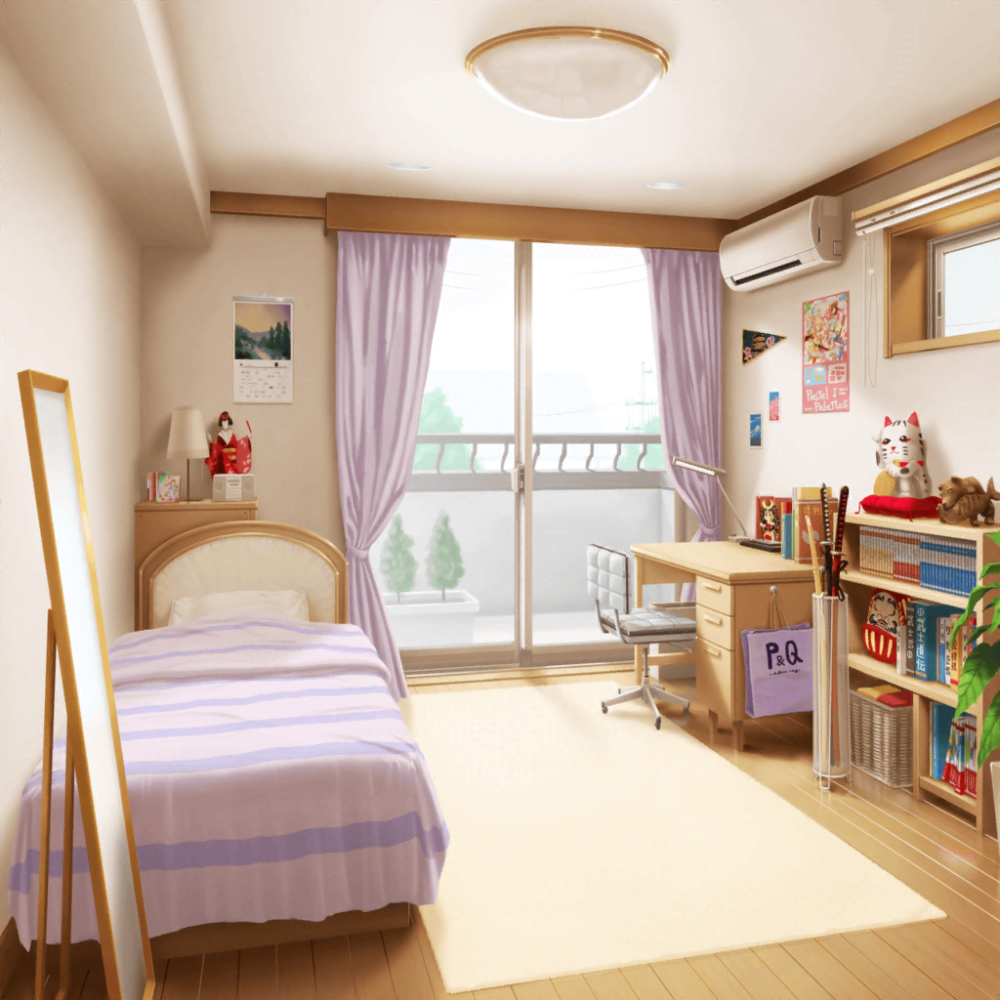

井ノ島
モカ
……それでさ。
駅ってどっち？
ひまり
え、ええと……
多分、この道をまっすぐ……
あ、いや、あっちかな？
蘭
地図、あったほうがよくない？
つぐみ
うん、今アプリで見てみるね。
えーっと、現在地がここで……
巴
とりあえず、右のほうに行けばいいのか？
モカ
右っていうか、東？
ひまり
でも私の地図アプリだと、このままこの通りからでも
行けるみたいだよ
つぐみ
けど、道順が結構複雑じゃないかな？
途中で迷っちゃわないといいけど……
モカ
よくわかんないけど、
他の人が向かってく方向についてけばいいんじゃない？
みんな、観光帰りって感じするし
巴
……だな。それがいいかも
ひまり
あ、看板出てきた！
よかったー、この道であってたんだね
モカ
あっ……！
巴
どうした、モカ？
モカ
さっき通った時、行列だったたこせんのお店が……っ！
ひまり
ああ、ホントだ！
今は結構空いてきてるね！
モカ
す、すまない、みんな……
あたしのことは気にせず先に行ってくれ……
ここはモカちゃんが食い止める……っ！
ひまり
何言ってんのモカー！
たこせん食べたいだけじゃん！
蘭
けど、そんな時間あるかな？
さっきよりだいぶ日が落ちてきてない？
巴
まあ……大丈夫じゃないか？
目的の駅もわかってるし、
ここから１０分くらいみたいだからさ
モカ
巴神様〜！
巴
せっかくの遠出なんだから、やりたいこと全部やろうって、
さっき蘭が言ってただろ？
ひまり
そっか。そうだよね。
モカ、一緒にたこせん買いに行こ！
モカ
ひーちゃん、ホントはたこせん食べたかったんじゃん〜？
ひまり
え、えへへ……間に合うなら食べていきたいなーって
モカ
みんな、おまたへー
蘭
うわ、デカ！？
巴
たこせんってこんなでっかいんだな……
顔が隠れちゃいそうだよ
ひまり
本物のたこをまるまる１匹使ってるんだって！
すごいよね！ ん〜、おいひ〜〜！！
巴、一口食べる？
モカ
つぐも蘭も、一口どーぞ
つぐみ
ありがとう！ ん……んんっ、美味しい！
蘭
ホントだ。香ばしくて美味しいね
ひまり
ねえねえ巴、写真撮って！
たこせんと私！
巴
はいはい、じゃあそこに立って……よし、撮ったぞ
モカ
蘭〜、たこタオルかぶってよ。
たこせんとたこ蘭。写真撮ろ〜
蘭
もう、いいからそういうの！
つぐみ
ふふっ。でも、かわいいからいいと思うけどな
蘭
つぐみまで……って！
のんびりしてる時間ないよ！ 早く移動しないと！
巴
ヤバ！ また目的忘れてた……
楽しいとつい忘れちゃうんだよな〜……
ひまり
みんな、駅まで走ろうっ！
モカ
おっけ〜。モカちゃんの超スピードを見せてやろう〜
つぐみ
……あ！
巴
どうした、つぐ！？
つぐみ
イヴちゃんにお土産頼まれてたのに、買えなかった……
蘭
……諦めよう……イヴにはあたし達一緒に謝るから
巴
なんかゴメンな、つぐ……
つぐみ
ううん！ 私も頭から抜けちゃってて……
イヴちゃん、ごめんね〜！
モカ
あはは〜。今の、きっとイヴちんに届いたよ〜
